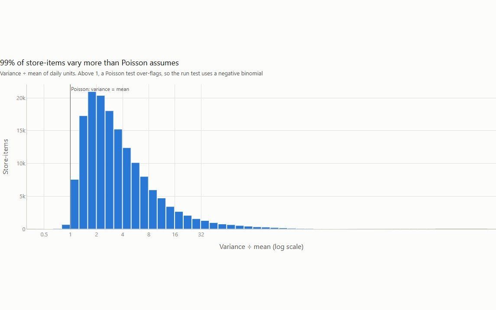
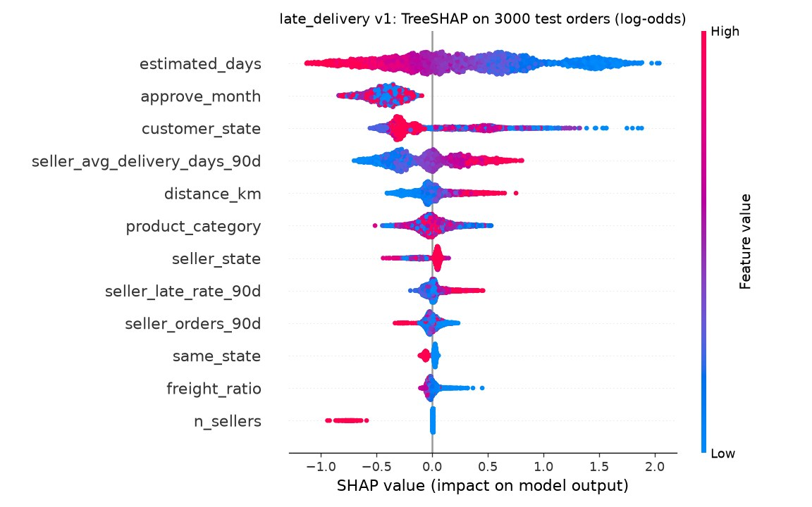
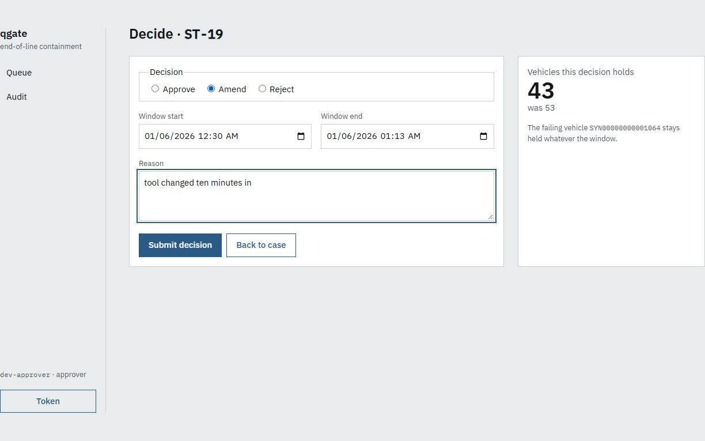

Academic portfolio · Data science · Machine learning · AI
Amir Abdullah Zakaria
Final-year BSc Computer Science student at ELTE Budapest, applying for MSc programmes in data science, artificial intelligence and machine learning.
Research assistant in ELTE’s Numerical Analysis Modeling Lab, reproducing a published deep learning method for ECG signal denoising.
Teaching assistant for Discrete Mathematics and Computer Systems, and a Stipendium Hungaricum Scholar graduating in January 2027.
- 4.58/5.0
- CGPA, BSc Computer Science, ELTE
- 7.5
- IELTS band score
- 1st
- place, INEC 2026 engineering competition
- 2nd
- place, Cognition LaunchLoop hackathon
Budapest, Hungary
Research interests
I am interested in machine learning that holds up on real data: models for signals and time series, and evaluation honest enough to say when a method works and when it does not.
In ELTE’s Numerical Analysis Modeling Lab I am reproducing a published approach to ECG baseline wander removal — separating the slow drift caused by breathing and electrode movement from the waveform a clinician actually reads — and comparing it with classical and optimisation-based methods under the paper’s own protocol. Reproducing someone else’s result showed me how much a conclusion depends on how it is measured.
I bring the same habit to my own projects: a model is only promoted when it beats its baselines, a statistical test is chosen because the data violates the simpler one’s assumptions, and a benchmark reports the result that contradicted its own design.
At master’s level I want to go deeper into:
- machine learning for signals and time series, including biomedical data;
- model-based deep learning, where networks are built by unrolling optimisation algorithms such as FISTA;
- statistics and evaluation methodology for machine learning;
- reliable AI systems that keep a person in the loop for high-stakes decisions.
Research
Research Assistant — Numerical Analysis Modeling Lab
Eötvös Loránd University (ELTE)
June 2026 – Present, Budapest
Reproduction of an EMBC 2025 paper on sparse dictionary learning neural networks for ECG baseline wander removal.
- Question
- Does the paper’s sparse dictionary learning network remove baseline wander better than classical and optimisation-based methods, when every method is measured the same way?
- Data
- PhysioNet Challenge 2020 ECG recordings.
- Methods
- Benchmarked a CNN, Quadratic Programming, FISTA and FISTA-Net under the paper’s own evaluation protocol and metrics.
- Evaluation
- Examined test-set reconstructions to judge which methods best preserve clinically relevant ECG morphology, not only which score best.
- Literature
- Reviewed baseline wander removal across filtering, wavelet, optimisation-based and deep learning approaches.
Education
BSc Computer Science
Eötvös Loránd University (ELTE), Budapest
September 2023 – Expected January 2027
CGPA 4.58 / 5.0 Stipendium Hungaricum Scholar
Key coursework
- Machine Learning
- Numerical Analysis
- Algorithms & Data Structures
- Discrete Mathematics
- Database Systems
- Operating Systems
- Computer Networks
English
IELTS 7.5
Awards & honours
-
Stipendium Hungaricum Scholarship
Government of Hungary
Awarded 2023, for the BSc at ELTE
-
Champions — INEC 2026
Innovative Engineering Competition, BEST Budapest
2026, Budapest University of Technology and Economics · team of three
- Ship or Block — a validation layer that checks AI-generated legal answers against the version of the law in force on the date of each question, tuned for precision because a wrong answer cost far more than a right one earned.
- EV challenge — a Simulink model of an electric vehicle predicting speed, torque, current and battery state of charge, calibrated on real drive logs and tested on a drive it had never seen.
- SmartShift — a scheduling app built in 60 minutes that balances workload across groups by availability.
-
2nd place — Cognition LaunchLoop hackathon
With preflight, benchmarked below
Teaching
Teaching Assistant — Discrete Mathematics & Computer Systems
Eötvös Loránd University (ELTE)
September 2025 – Present, Budapest
- Tutor undergraduates in logic, set theory, combinatorics, graph theory and proof techniques.
- Lead hands-on Linux, Bash and PowerShell labs covering shell environments, file systems, processes and automation.
- Prepare practice exercises, lab materials and assessments.
Selected projects
Independent projects where the question and the evaluation matter as much as the build. Each links to its code, and every figure is a real output of it.
-

Why the stock-out test is negative binomial, not Poisson. Favorita stock-out & promotion analysis
Statistical testing on 42.8M rows of grocery sales, in PySpark on Databricks
- Question
- Across 54 stores and twelve months, which zero-sales days are genuine stock-outs, and do promotions still pay back once the dip in the following week is counted?
- Method
- 99% of store-items were over-dispersed relative to Poisson, so I used a negative binomial run test with Benjamini–Hochberg false discovery control, and estimated net promotional lift per product family with 95% bootstrap confidence intervals.
- Result
- The stock-out flag rate fell from 21.5% under Poisson to 4.8%. Promotions pay back in 23 of 29 product families, but not in fresh food.
-

What drives the late-delivery model, over 3,000 test orders. Retail Data Platform
Late-delivery prediction on the Olist e-commerce dataset, inside an end-to-end data platform
- Question
- Can late deliveries be predicted well enough to beat simple baselines, from features built in a governed lakehouse rather than a one-off notebook?
- Method
- A LightGBM classifier on features from a Spark and Delta Lake pipeline with data-quality gates, tracked in MLflow and explained with SHAP.
- Result
- The model is promoted only if it beats both baselines: test PR-AUC 0.134 against 0.055 and 0.104. Targets it misses are reported too.
-

Cost per arm. The capped-cheap arm E, against the design’s expectation, is the most expensive. 2nd place · Cognition LaunchLoop hackathon
preflight
A controlled benchmark of cheap-first LLM coding agents
- Question
- Can a one-cent brief written by a small model let a cheap coding agent match an expensive one, and when should it escalate?
- Method
- 45 runs across nine arms on five seeded bugs, with the repository’s own tests as the judge and control arms that isolate whether the handoff itself does any work.
- Result
- The brief let the cheap model match the expensive one at 32% less cost, and held across vendors. Starting cheap under a budget cap was 16% more expensive — the result that contradicted the design, reported first.
- Limits
- Five bugs and one run per cell is directional, not a measurement; repeated runs are the first thing to add.
-

Nothing is held until a person approves or amends it. qgate-agent
A human-in-the-loop AI agent for manufacturing quality decisions
- Question
- When a vehicle fails its end-of-line test, can an agent propose how many vehicles to quarantine without ever being allowed to act alone?
- Method
- The agent correlates the failure with build genealogy and station drift and drafts a containment order with its evidence; every tool is read-only, and a person must approve, amend or reject before anything is held.
- Result
- Scored on fifty golden scenarios, including those where the right answer is to propose nothing. Under fault injection, a 20-second outage mid-commit still left exactly one hold, and none of 138,624 simulated events were lost.
Industry experience
Data Analyst Intern
The Estée Lauder Companies Inc.
June 2025 – Present, Budapest
Built a production Power BI star-schema model for vendor closing and savings tracking from scattered spreadsheets, cleaned and restructured 100,000+ records in Python, and automated 16+ reporting and governance processes, saving over 100 hours a month.
Contact
I am happy to talk about my research, my projects or a programme. The fastest way to reach me is email.
LinkedIn GitHub Download CV Full portfolio
Budapest, Hungary